1事务与ACID
1.1 本讲目录
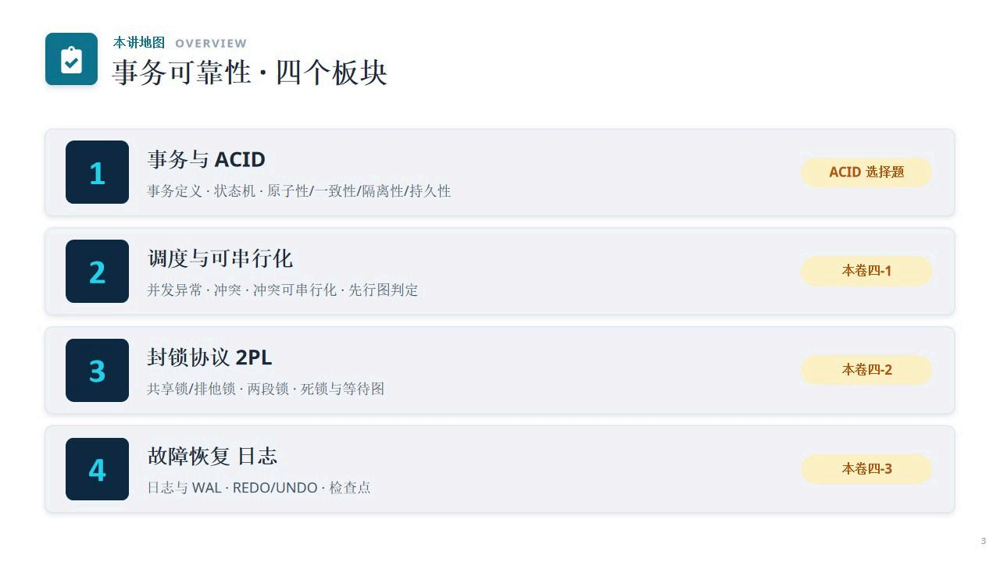
1.2 事务：要么全做，要么全不做
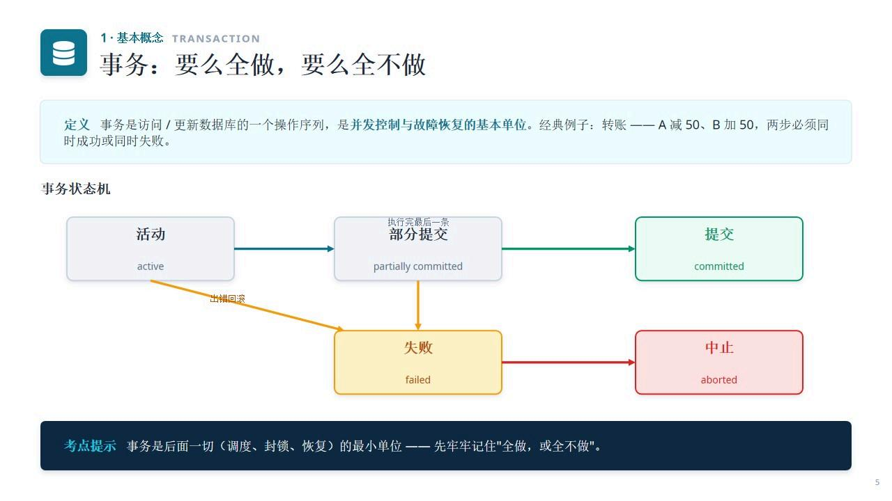
定义：事务是访问/更新数据库的一个操作序列，是并发控制与故障恢复的基本单位。经典例子：转账——A减50、B加50，两步必须同时成功或同时失败。
事务状态机：
- 活动（active）→ 执行完最后一条 → 部分提交（partially committed） → 提交（committed）
- 活动（出错回滚）→ 失败（failed） → 中止（aborted）
考点提示：事务是后面一切（调度、封锁、恢复）的最小单位——先牢牢记住"全做，或全不做"。
1.3 事务的四大特性ACID
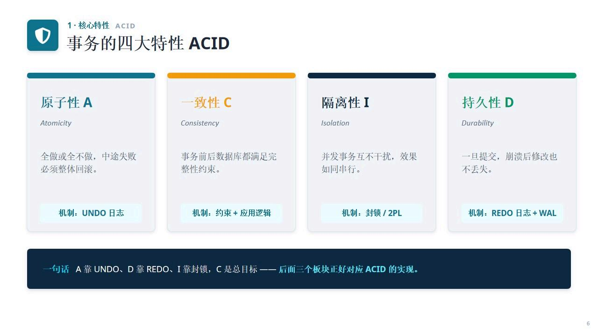
- 原子性 A（Atomicity）：全做或全不做，中途失败必须整体回滚。机制：UNDO日志
- 一致性 C（Consistency）：事务前后数据库都满足完整性约束。机制：约束+应用逻辑
- 隔离性 I（Isolation）：并发事务互不干扰，效果如同串行。机制：封锁/2PL
- 持久性 D（Durability）：一旦提交，崩溃后修改也不丢失。机制：REDO日志+WAL
记忆：A靠UNDO、D靠REDO、I靠封锁，C是总目标——后面三个板块正好对应ACID的实现。
1.4 ACID选择题怎么考
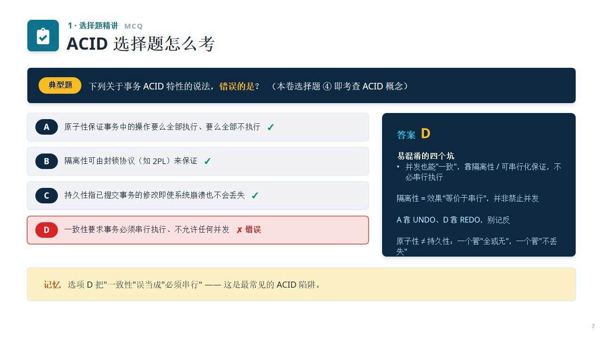
易混淆的四个坑：
- 并发也能"一致"，靠隔离性/可串行化保证，不必串行执行
- 隔离性=效果"等价于串行"，并非禁止并发
- A靠UNDO、D靠REDO，别记反
- 原子性≠持久性：一个管"全或无"，一个管"不丢失"
记忆：选项D把"一致性"误当成"必须串行"——这是最常见的ACID陷阱。
2调度与可串行化
2.1 调度与并发的三类异常
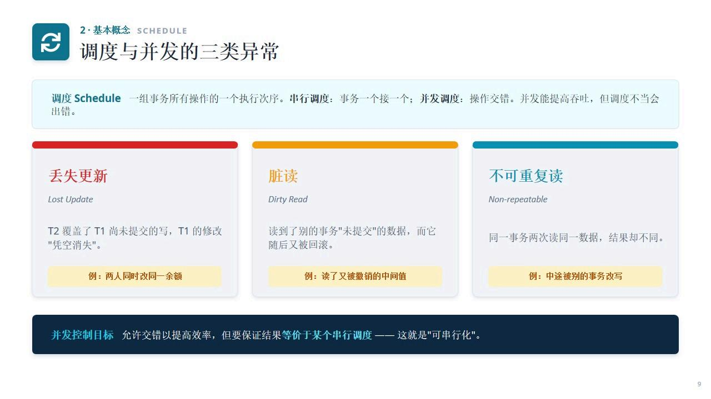
调度Schedule：一组事务所有操作的一个执行次序。串行调度：事务一个接一个；并发调度：操作交错。并发能提高吞吐，但调度不当会出错。
- 丢失更新（Lost Update）：T2覆盖了T1尚未提交的写，T1的修改"凭空消失"。例：两人同时改同一余额
- 脏读（Dirty Read）：读到了别的事务"未提交"的数据，而它随后又被回滚。例：读了又被撤销的中间值
- 不可重复读（Non-repeatable）：同一事务两次读同一数据，结果却不同。例：中途被别的事务改写
并发控制目标：允许交错以提高效率，但要保证结果等价于某个串行调度——这就是"可串行化"。
2.2 冲突·冲突等价·冲突可串行化
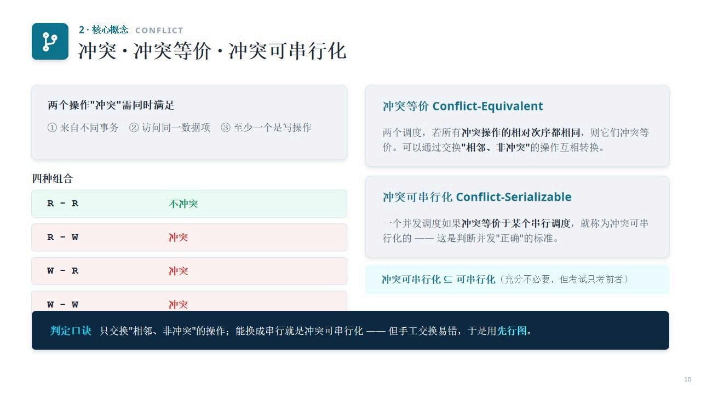
两个操作"冲突"需同时满足：①来自不同事务 ②访问同一数据项 ③至少一个是写操作
四种组合：
- R-R：不冲突
- R-W、W-R、W-W：冲突
冲突等价 Conflict-Equivalent：两个调度，若所有冲突操作的相对次序都相同，则它们冲突等价。可以通过交换"相邻、非冲突"的操作互相转换。
冲突可串行化 Conflict-Serializable：一个并发调度如果冲突等价于某个串行调度，就称为冲突可串行化的——这是判断并发"正确"的标准。
判定口诀：只交换"相邻、非冲突"的操作；能换成串行就是冲突可串行化——但手工交换易错，于是用先行图。
2.3 先行图：三步判定可串行化
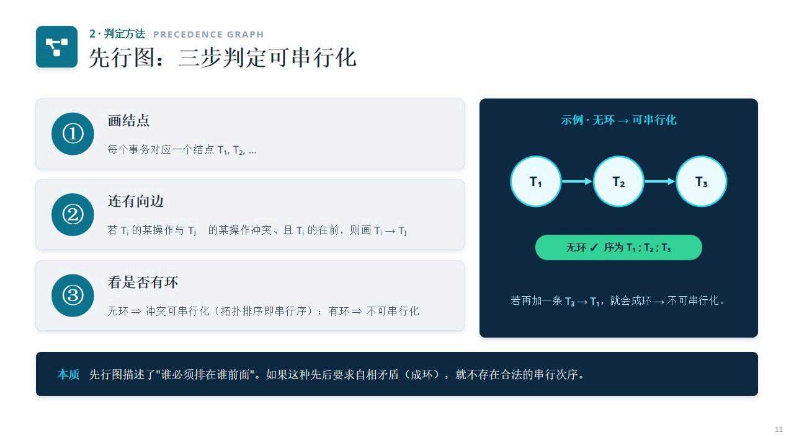
- 画结点：每个事务对应一个结点 T₁, T₂, ...
- 连有向边：若Tᵢ的某操作与Tⱼ的某操作冲突、且Tᵢ的在前，则画 Tᵢ → Tⱼ
- 看是否有环：无环⇒冲突可串行化（拓扑排序即串行序）；有环⇒不可串行化
本质：先行图描述了"谁必须排在谁前面"。如果这种先后要求自相矛盾（成环），就不存在合法的串行次序。
2.4 可串行化的调度例题
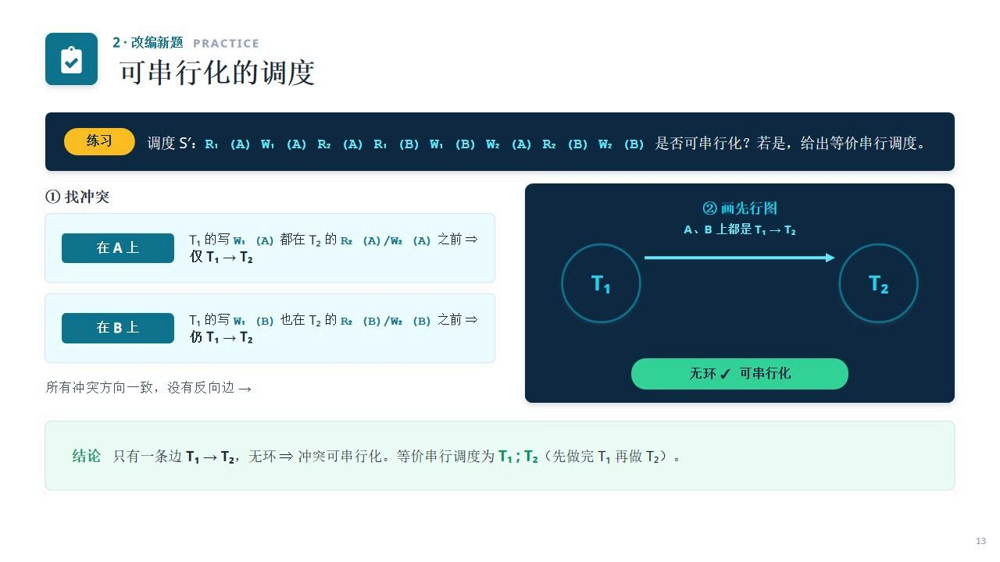
找冲突：
- 在A上：T₁的写W₁(A)都在T₂的R₂(A)/W₂(A)之前⇒仅 T₁→T₂
- 在B上：T₁的写W₁(B)也在T₂的R₂(B)/W₂(B)之前⇒仍 T₁→T₂
所有冲突方向一致，没有反向边→无环✓可串行化。等价串行调度为 T₁;T₂（先做完T₁再做T₂）。
3封锁协议2PL
3.1 共享锁S与排他锁X
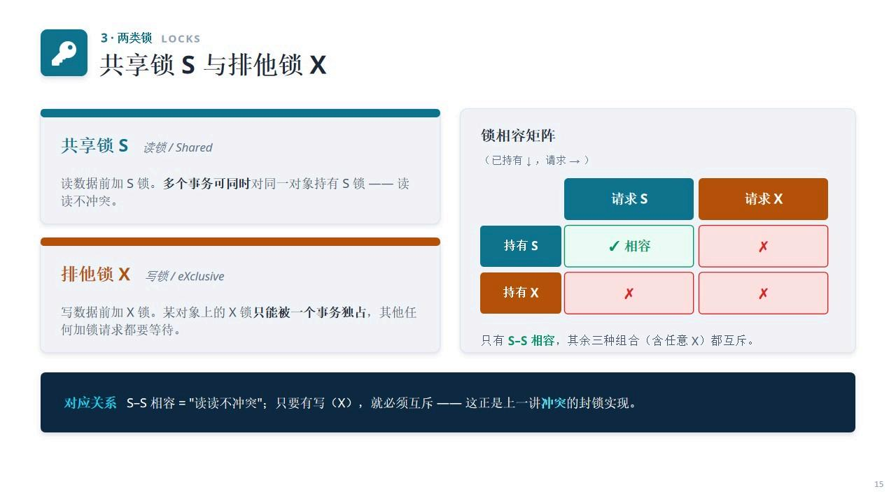
- 共享锁S（读锁/Shared）：读数据前加S锁。多个事务可同时对同一对象持有S锁——读读不冲突。
- 排他锁X（写锁/eXclusive）：写数据前加X锁。某对象上的X锁只能被一个事务独占，其他任何加锁请求都要等待。
锁相容矩阵：只有S-S相容，其余三种组合（含任意X）都互斥。
核心关系：S-S相容="读读不冲突"；只要有写（X），就必须互斥——这正是上一讲冲突的封锁实现。
3.2 两段锁协议2PL与三种变体
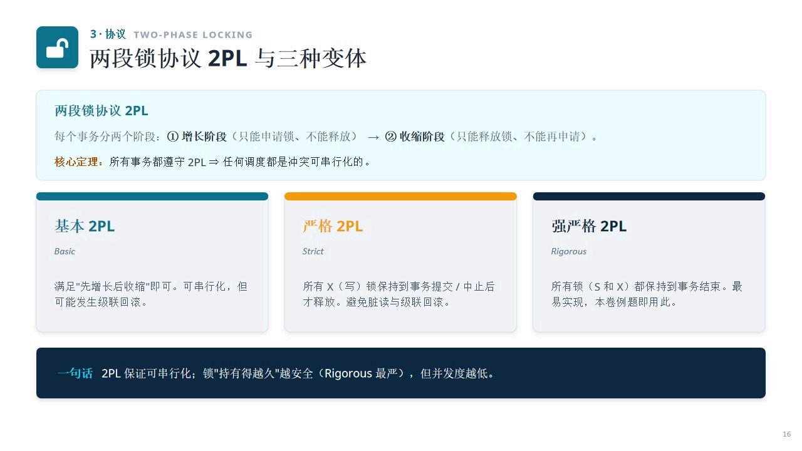
两段锁协议2PL：每个事务分两个阶段：①增长阶段（只能申请锁、不能释放）→ ②收缩阶段（只能释放锁、不能再申请）。
核心定理：所有事务都遵守2PL ⇒ 任何调度都是冲突可串行化的。
- 基本2PL：满足"先增长后收缩"即可。可串行化，但可能发生级联回滚。
- 严格2PL：所有X（写）锁保持到事务提交/中止后才释放。避免脏读与级联回滚。
- 强严格2PL：所有锁（S和X）都保持到事务结束。最易实现，本卷例题即用此。
一句话：2PL保证可串行化；锁"持有得越久"越安全（Rigorous最严），但并发度越低。
3.3 为两个事务加排他锁例题
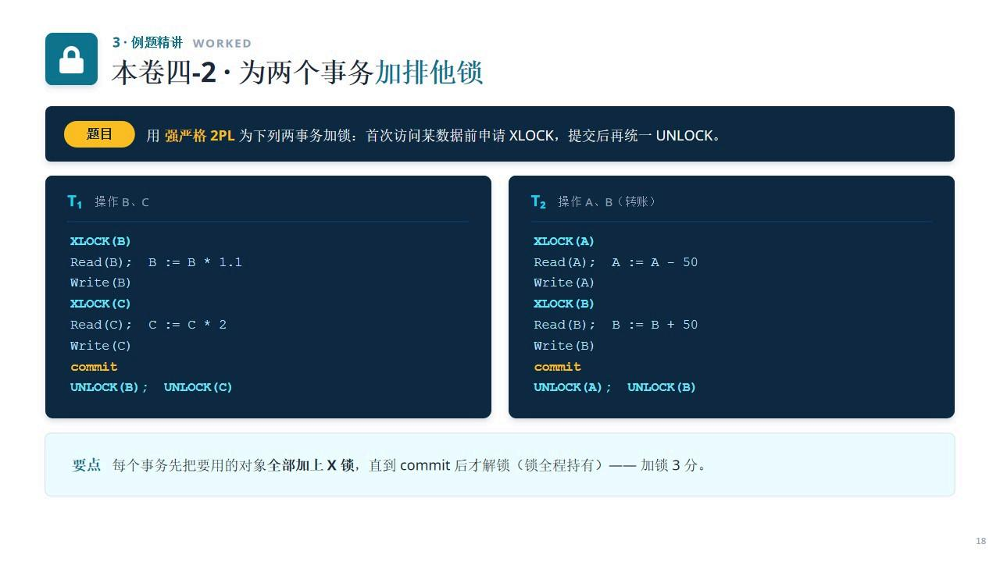
要点：每个事务先把要用的对象全部加上X锁，直到commit后才解锁（锁全程持有）——加锁3分。
4故障恢复日志
4.1 崩溃后：谁REDO，谁UNDO
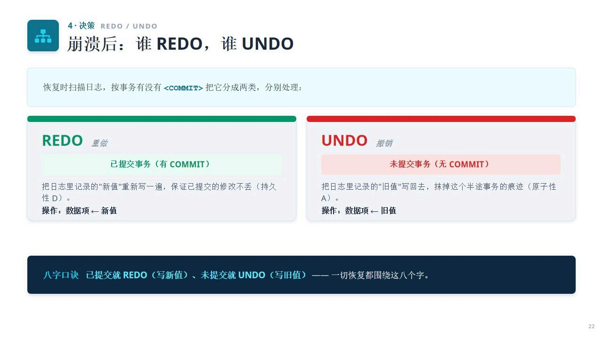
恢复时扫描日志，按事务有没有<COMMIT>把它分成两类，分别处理：
- REDO 重做（已提交事务，有COMMIT）：把日志里记录的"新值"重新写一遍，保证已提交的修改不丢（持久性D）。操作：数据项←新值
- UNDO 撤销（未提交事务，无COMMIT）：把日志里记录的"旧值"写回去，抹掉这个半途事务的痕迹（原子性A）。操作：数据项←旧值
八字口诀：已提交就REDO（写新值）、未提交就UNDO（写旧值）——一切恢复都围绕这八个字。
4.2 检查点与恢复流程
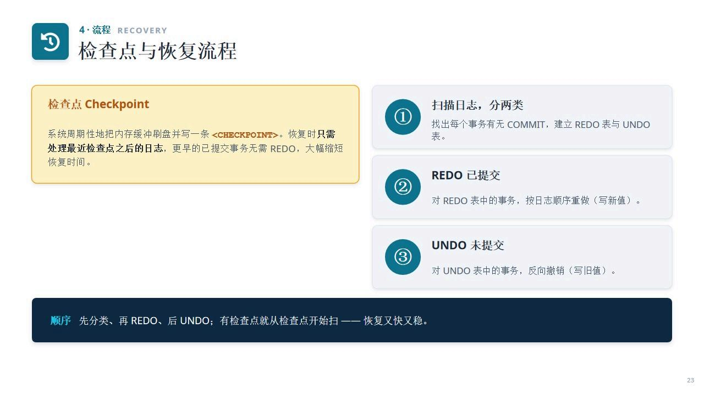
检查点Checkpoint：系统周期性地把内存缓冲刷盘并写一条<CHECKPOINT>。恢复时只需处理最近检查点之后的日志，更早的已提交事务无需REDO，大幅缩短恢复时间。
恢复流程：
- 扫描日志，分两类：找出每个事务有无COMMIT，建立REDO表与UNDO表
- REDO已提交：对REDO表中的事务，按日志顺序重做（写新值）
- UNDO未提交：对UNDO表中的事务，反向撤销（写旧值）
口诀：先分类、再REDO、后UNDO；有检查点就从检查点开始扫——恢复又快又稳。
4.3 崩溃后的日志恢复例题
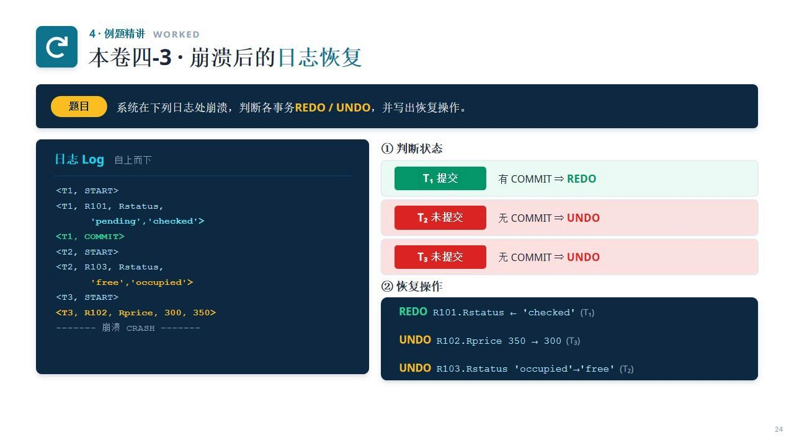
判断状态：
- T₁提交（有COMMIT）⇒ REDO
- T₂未提交（无COMMIT）⇒ UNDO
- T₃未提交（无COMMIT）⇒ UNDO
恢复操作：
- REDO：R101.Rstatus ← 'checked' (T₁)
- UNDO：R102.Rprice 350 → 300 (T₃)
- UNDO：R103.Rstatus 'occupied'→'free' (T₂)
4.4 易错清单与全卷地图
本讲易错清单：
- 隔离性≠禁止并发，而是效果"等价于串行"
- 先行图判定：有环就一定不可串行化
- 冲突需"不同事务+同一数据+至少一个写"
- 强严格2PL：所有锁持有到提交后才释放
- 死锁看等待图有没有环，无环则无死锁
- REDO写新值（已提交）、UNDO写旧值（未提交）